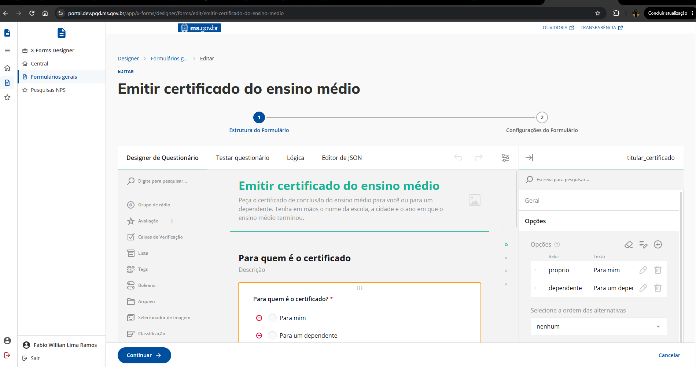
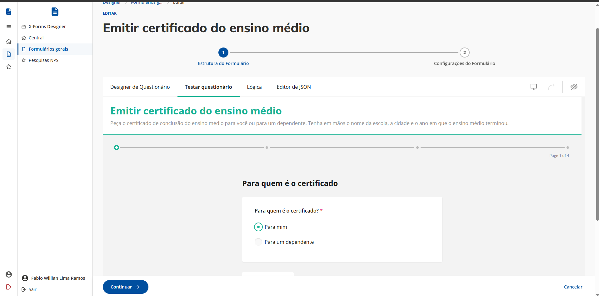
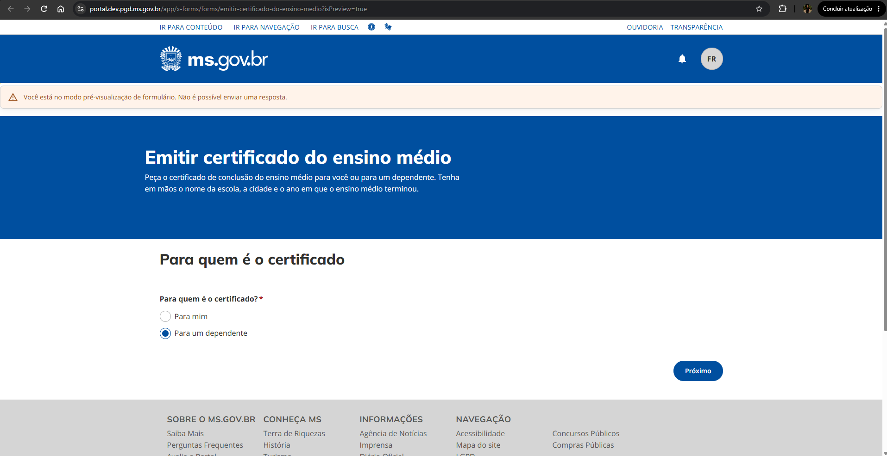
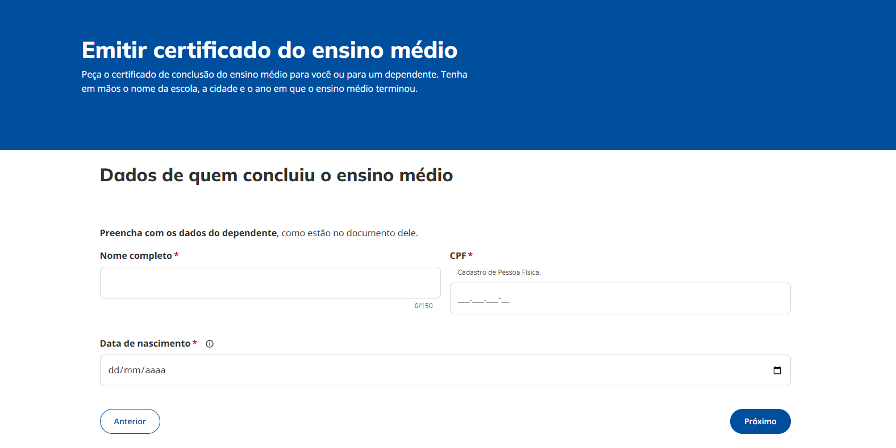

Formulário: o que o cidadão vê¶
O mesmo formulário aparece de 3 jeitos no X-Forms, e só o terceiro é o que o cidadão vê. Quem monta o formulário confere no Designer ou no "Testar questionário" e publica algo diferente do que viu.
Exemplo: o formulário Emitir certificado do ensino médio, em desenvolvimento (23/11/2026).
As 3 telas¶




O que encontramos¶
| # | Achado | Onde | Efeito |
|---|---|---|---|
| 1 | O Testar questionário não mostra a tela do cidadão: tema, cabeçalho, barra de etapas, radio e botões são outros | Tela 2 × tela 3 | Quem monta valida a tela errada e só descobre o problema depois de publicar |
| 2 | O canvas do Designer mostra um terceiro layout | Tela 1 | Mais uma versão para conferir; nenhuma bate com a do cidadão |
| 3 | Campos lado a lado desalinhados: a ajuda fica entre o rótulo e o campo, e o contador desce | Tela 3, passo 2 | Formulário com cara de improviso, e mais difícil de ler |
| 4 | O Visualizar nunca passou por homologação visual da SGD | Tela 3 | Os erros chegam ao cidadão sem ninguém ter conferido |
O Design System já tem os componentes?¶
Quase todos. A tabela de qual componente usar e o que falta está em Componentes do formulário.
O que pedimos à X-VIA¶
- ~~Uma só renderização no backoffice.~~ Decidido em 24/11/2026: o Designer e o Testar questionário continuam diferentes. Mudar exigiria mexer direto no SurveyJS, e o custo não compensa. O que vale é a tela do cidadão (Visualizar), que já usa os componentes do DS: confira sempre nela.
- O Visualizar segue o DS MS:
- a ajuda fica abaixo do campo, como no
ds-input, nunca entre o rótulo e o campo; - o contador fica alinhado ao campo dele;
- um campo por linha; se houver colunas, os campos alinham pelo topo do campo, não pelo rótulo;
- radio e checkbox em grupo, com
fieldsetelegend; - etapas no padrão do
ds-stepper.
- a ajuda fica abaixo do campo, como no
- Homologação visual pela SGD antes de publicar formulário novo: a SGD confere no Visualizar e dá o aceite.
O que é com a SGD¶
- A regra de layout do padrão de formulário: um campo por linha e ajuda abaixo do campo.
- A homologação confere sempre no Visualizar, nunca no Testar questionário.